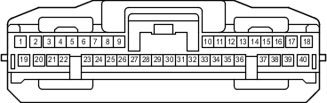

Наименование
ЭБУ помощи при движении в сборе
Код
G119
Каталожный номер
90980-12708
Цвет
Белый
Технические характеристики

Расположение
Расположение деталей в панели приборов (для моделей с левосторонним рулевым управлением) 3
Расположение деталей в панели приборов (для моделей с правосторонним рулевым управлением) 3
Система
Динамическая радарная система круиз-контроля (для моделей с 1GR-FE)
Динамическая радарная система круиз-контроля (для моделей с 1KD-FTV)
Мультиплексная система передачи данных (CAN, для моделей с левосторонним рулевым управлением)
Мультиплексная система передачи данных (CAN, для моделей с правосторонним рулевым управлением)
Предаварийная система безопасности